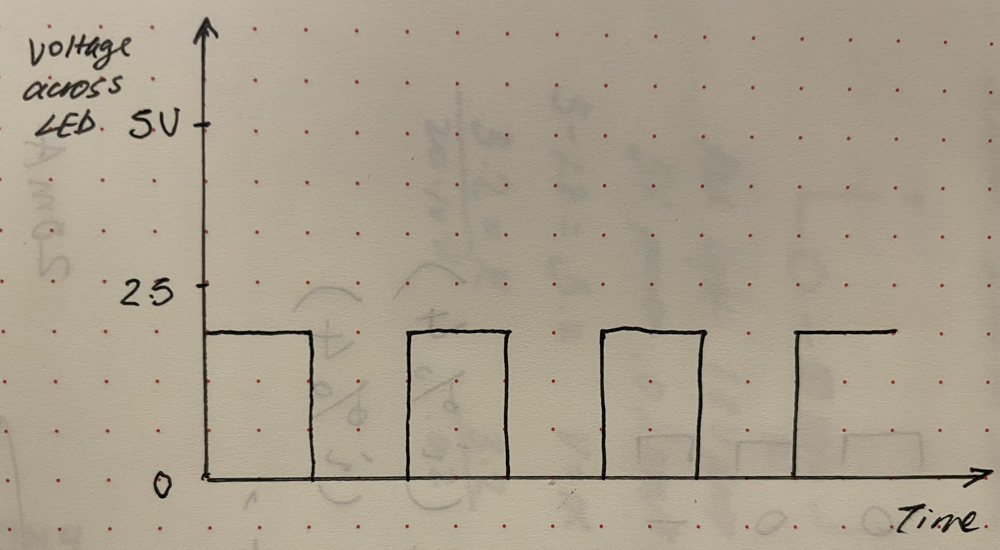
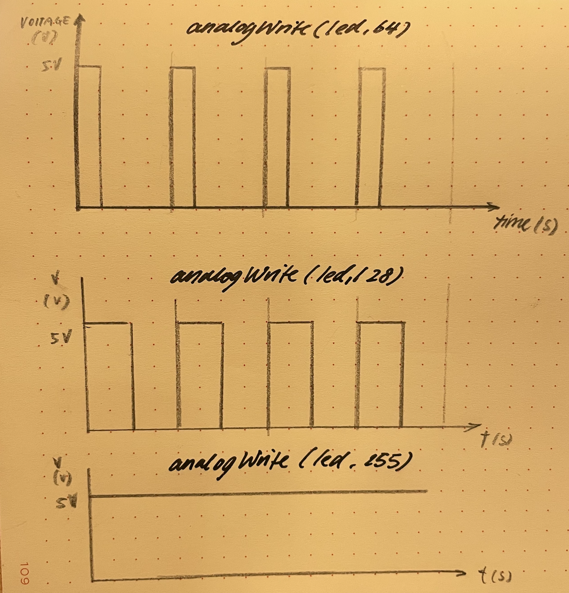
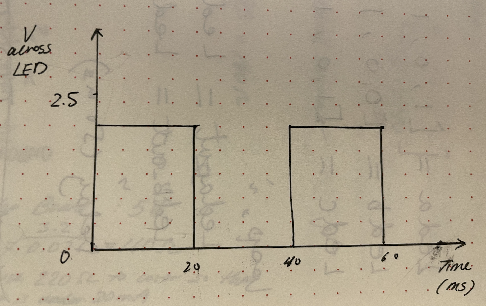

Document for Assignment 1: Blink!
I used Ohm's law to perform the calculations, to pick the resistor so that the current is under 20mA
3 graphs shown for 3 LED:
  they open and close at different rates, when they are on, the voltage is 1.8V, when they are off it is 0V
The Arduino have 14 GPIO ports, so I can have 14 LEDs that blink independently for each LED(red) the current that passes through when it's light is on is 14.5mA so for 14 LEDs, the max current would be 203mA, however, we do need to check the maximum current that Arduino can operate safely.
I wasnt able to tell that it is blinking at 12ms

below is the code snippet:
/*
Blink
Turns an LED on for one second, then off for one second, repeatedly.
Most Arduinos have an on-board LED you can control. On the UNO, MEGA and ZERO
it is attached to digital pin 13, on MKR1000 on pin 6. LED_BUILTIN is set to
the correct LED pin independent of which board is used.
If you want to know what pin the on-board LED is connected to on your Arduino
model, check the Technical Specs of your board at:
https://www.arduino.cc/en/Main/Products
modified 8 May 2014
by Scott Fitzgerald
modified 2 Sep 2016
by Arturo Guadalupi
modified 8 Sep 2016
by Colby Newman
This example code is in the public domain.
https://www.arduino.cc/en/Tutorial/BuiltInExamples/Blink
*/
// Define constants for ON and OFF durations
int led13_ON = 20; // Duration LED on pin 13 stays ON
int led13_OFF = 10; // Duration LED on pin 13 stays OFF
int led7_ON = 10; // Duration LED on pin 7 stays ON
int led7_OFF = 10; // Duration LED on pin 7 stays OFF
int led4_ON = 20; // Duration LED on pin 4 stays ON
int led4_OFF = 20; // Duration LED on pin 4 stays OFF
// State variables
int led13_on_count = led13_ON; //initiate count to the variable set above
int led13_off_count = 0; //inititate count to 0
int led7_on_count = led7_ON; //initiate count to the variable set above
int led7_off_count = 0;//inititate count to 0
int led4_on_count = led4_ON;//initiate count to the variable set above
int led4_off_count = 0;//inititate count to 0
int led13_out = HIGH; // set LED to be on as starting position
int led7_out = HIGH;// set LED to be on as starting position
int led4_out = HIGH;// set LED to be on as starting position
void setup() {
// Initialize pins as outputs
pinMode(13, OUTPUT);
pinMode(7, OUTPUT);
pinMode(4, OUTPUT);
// Set initial state of LEDs
digitalWrite(13, led13_out); //setup the output to align with led13_out
digitalWrite(7, led7_out); //setup the output to align with led7_out
digitalWrite(4, led4_out); //setup the output to align with led4_out
}
void loop() {
// Handle LED on pin 13
if (led13_out == HIGH) { //check state of LED
if (led13_on_count > 0) { //check on count
led13_on_count = led13_on_count - 1;//count-1
} else {
led13_out = LOW; //reset output
digitalWrite(13, led13_out); //turn off LED
led13_off_count = led13_OFF; //set off-count
}
} else {
if (led13_off_count > 0) { //check off count
led13_off_count = led13_off_count - 1; //off count -1
} else {
led13_out = HIGH; //reset output
digitalWrite(13, led13_out); //turn on LED
led13_on_count = led13_ON; //set on-count
}
}
// Handle LED on pin 7 same with pin 13
if (led7_out == HIGH) {
if (led7_on_count > 0) {
led7_on_count = led7_on_count - 1;
} else {
led7_out = LOW;
digitalWrite(7, led7_out);
led7_off_count = led7_OFF;
}
} else {
if (led7_off_count > 0) {
led7_off_count = led7_off_count - 1;
} else {
led7_out = HIGH;
digitalWrite(7, led7_out);
led7_on_count = led7_ON;
}
}
// Handle LED on pin 4 same with pin 13
if (led4_out == HIGH) {
if (led4_on_count > 0) {
led4_on_count = led4_on_count - 1;
} else {
led4_out = LOW;
digitalWrite(4, led4_out);
led4_off_count = led4_OFF;
}
} else {
if (led4_off_count > 0) {
led4_off_count = led4_off_count - 1;
} else {
led4_out = HIGH;
digitalWrite(4, led4_out);
led4_on_count = led4_ON;
}
}
delay(1);// Wait for 1ms before the next cycle
}